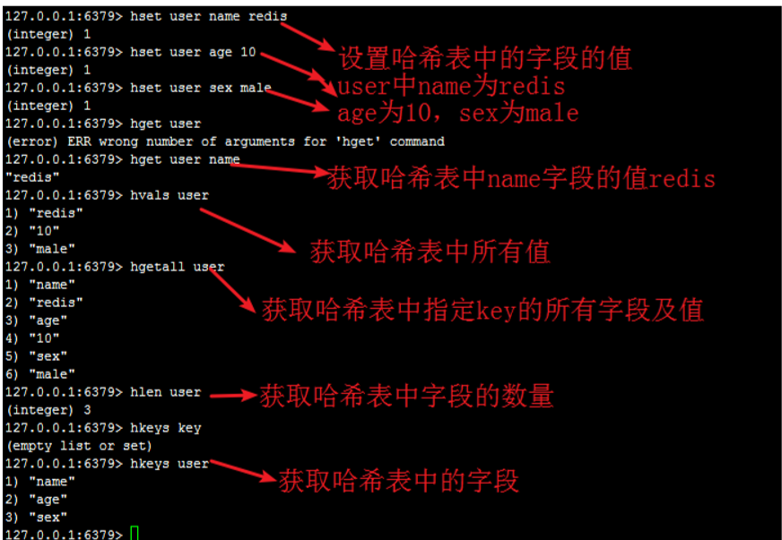
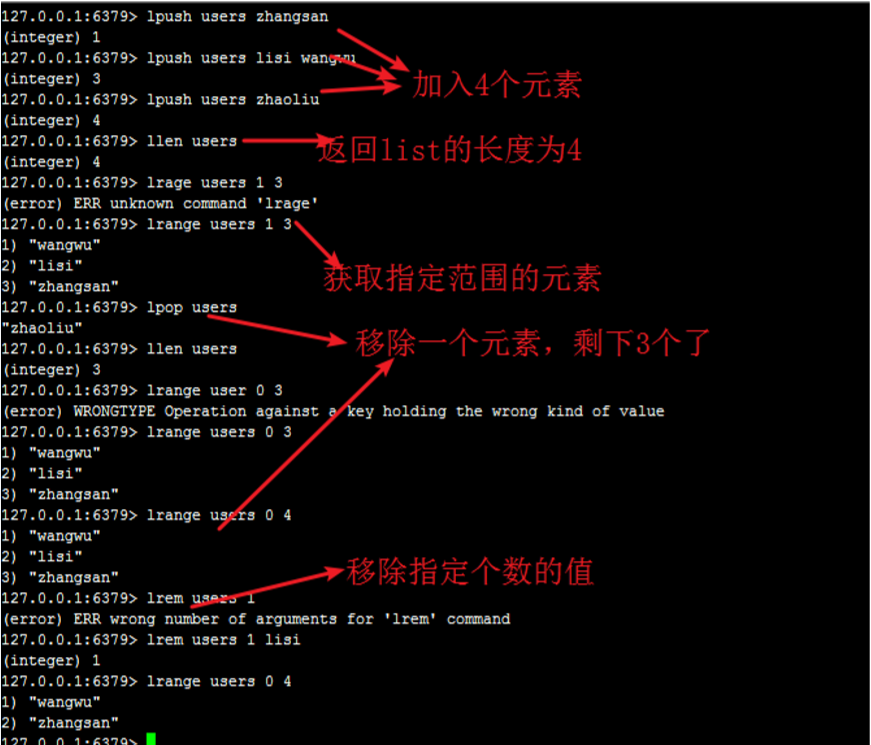
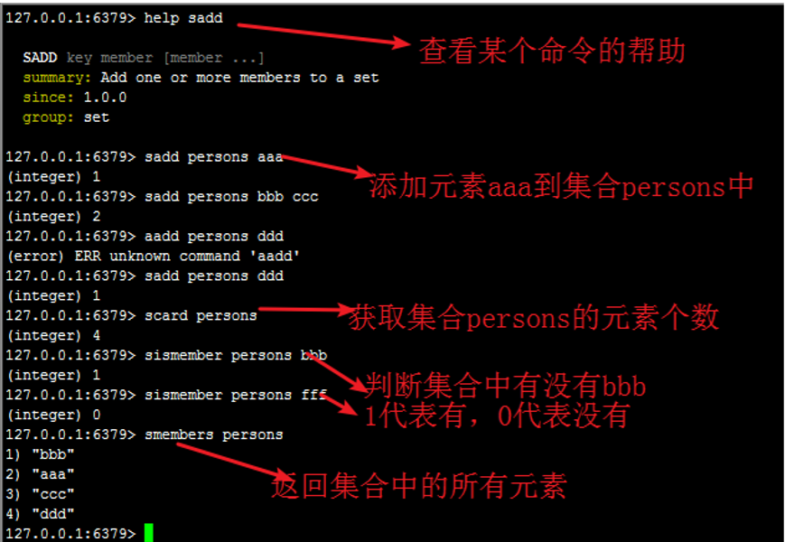
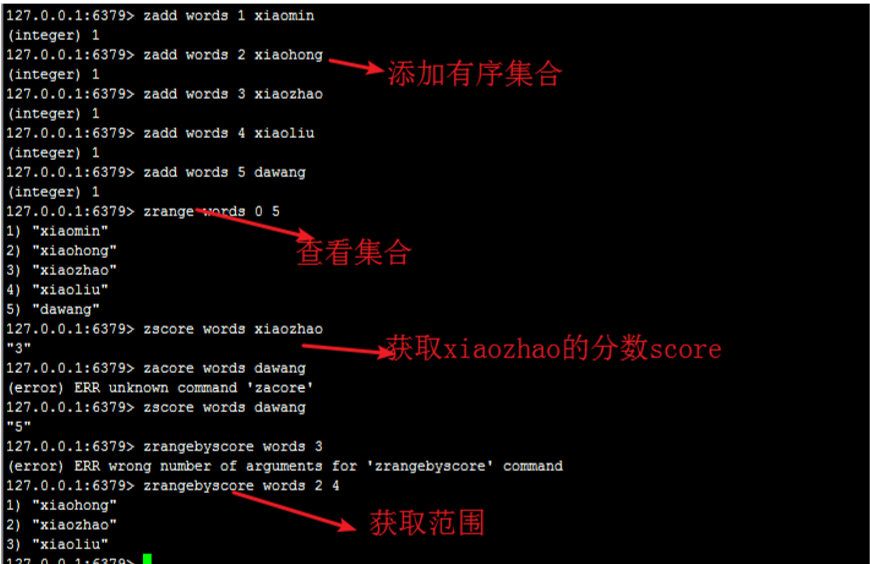

Redis简介
Redis 全称为：Remote Dictionary Server（远程数据服务），是一个开源的使用C语言编写、支持网络、可基于内存还可以持久化的日志型、Key-Value数据库，并提供多种语言的API，官方推荐使用Linux部署。
官方网站： https://redis.io/
并且，Redis具有以下特征：
- 数据的持久化（定期把内存中的数据写入磁盘中，重启时可以再次加载使用）
- 丰富的数据类型：string,list,hash,set,sorted set(zset)
- 原子性：单操作和事务都支持原子性，要么全部处理要么全不处理
- 主从同步
Redis的特点：
- Redis 本质上是一个 key-value 类型的数据库
- 整个数据库都是在内存中进行操作，可定期刷新到磁盘进行持久化存储
- 由于是在内存操作，读写能力非常好，每秒可以处理 10 万次读写操作
- Redis 支持多种数据结构，提供了丰富的数据类型选择
- Redis 同时支持数据备份，主从配置
- Redis 的所有操作都是原子性的
如果没有redis该怎么使用本地缓存
- 程序中定义内存数据结构来实现， 比如说定义一个成员变量Map 或者 List 均可以实现
- 使用开源的缓存框架 Ehcache，Ehcache 封装了对于内存操作的功能
- Guava Cache 是 Google 开源的工具集， 提供了缓存的边界操作工具
Redis 通讯协议是什么？有什么特点？
Redis 的通信协议是 Redis Serialization Protocol，简称 RESP。
有如下特性：
- 是二进制安全的
- 在 TCP 层
- 基于请求—响应的模式
Redis安装和配置
因为redis推荐Linux部署，所以本次以Ubuntu18.04LTS为例来安装redis：
首先，本次是编译安装我们要首先保证有编译环境
1 | sudo apt-get install make |
如果嫌弃下载安装速度过慢，可以更换apt源，清华源；将内容替换sources.list的内容即可
1 | cp /etc/apt/sources.list /etc/apt/sources.list.bak |
下载和安装，自己挑选一个目录，我这里使用的是我自建的/path：
1 | sudo mkdir -p /path |
编译安装完成，启动服务：
1 | sudo mkdir -p /path/redis.log |
验证：
1 | redis-cli |
关闭redis，在cli中输入:
1 | shutdown [SAVE|NOSAVE] |
待Redis安装之后，修改配置。查看配置：
Redis的配置文件位于Redis安装目录下，文件名为redis.conf，例如我的文件位置为：/path/redis-5.0.7/redis.conf
| redis.conf参数 | 说明 |
|---|---|
| daemonize no | Redis默认不是以守护进程的方式运行，可通过将no->yes，启动守护进程 |
| pidfile /var/run/redis.pid | 当redis以守护进程运行时，会把它进程的pid写入此文件里 |
| port 6379 | 指定Redis监听端口，默认6379 |
| bind 127.0.0.1 | 绑定的主机IP，127.0.0.1代表只允许本机连接，0.0.0.0代表允许其他主机连接 |
| timeout 300 | 当客户端闲置300s后关闭连接，0为关闭此功能 |
| loglevel notice | 指定日志级别，共有四个：debug、verbose、notice、warning |
| logfile “” | 指定日志文件名，默认为标准输出，如果为守护进程运行，而日志记录为标准输出，则日志会发送给/dev/null |
| databases 16 | 设置数据库的数量，默认数据库为0，可以使用SELECT <dbid>来再连接上指定数据库 |
| save <seconds> <changes> | 指定在多长时间内，有多少次更新操作，就将数据同步到数据文件，可以多个条件配合 Redis默认配置文件中提供了三个条件： save 900 1 save 300 10 sabe 60 10000 分别代表900秒(15min)内有一个更改，300秒(5min)内有10个更改以及60秒内有10000个更改。 |
| rdbcompression yes | 指定存储至本地数据库时是否压缩数据，默认为yes。采用LZF压缩。 |
| dbfilename dump.rdb | 本地数据库文件名，默认为dump.rdb |
| dir ./ | 指定本地数据库存放目录，请注意，必须在此处指定目录，而不是文件名。 |
| appendonly no | 指定是否在每次更新操作后进行日志记录，Redis在默认情况下是异步的把数据写入磁盘，如果不开启，可能会在断电时导致一段时间内的数据丢失。因为redis本身同步数据文件是按照上面的save来同步的，所以可能有些数据在一段时间里只存在于内存 |
| appendfilename “appendonly.aof” | 指定更新文件名 |
| appendfsync everysec | 指定更新日志条件，3个可选值： no: 表示操作系统进行数据缓存同步到磁盘(快) alway: 表示每次更新操作后手动调用fsync()将数据写到磁盘(慢，安全) everysec: 每秒同步一次(默认值) |
当修改daemonize yes后，启动redis的命令不用像上述一样麻烦，直接sudo /path/redis-5.0.7/src/redis-server /path/redis-5.0.7/redis.conf
日志级别：
1）debug：会打印出很多信息，适用于开发和测试阶段
2）verbose（冗长的）：包含很多不太有用的信息，但比debug要清晰一些
3）notice：适用于生产模式
4）warning : 警告信息
Redis的数据类型和使用
上面提到过，redis支持的五种数据类型：
- string
- list
- hash
- set
- sorted set(zset)
Redis的key-value
key的值是二进制安全的
通常我们设置键值时，要遵守：
- 以业务名(或数据库名)为前缀(防止key冲突)，用冒号分隔，比如业务名:表名:id
- 不要包含特殊字符，反例：包含空格、换行、单双引号以及其他转义字符
- 保证语义的前提下，控制key的长度，当key较多时，内存占用也不容忽视
user:{uid}:friends:messages:{mid}简化为u:{uid}:fr:m:{mid}。
value设计：
- string类型控制在10KB以内，hash、list、set、zset元素个数不要超过5000。
- 控制key的生命周期，redis不是垃圾桶。
Redis命令
命令语法：COMMAND KEY_NAME
KEYS命令
详细命令见表格：
| 序号 | keys命令 | 描述 |
|---|---|---|
| 1 | DEL key | 该命令用于在key存在时删除key |
| 2 | DUMP key | 序列化给定key，并返回被序列化的值 |
| 3 | EXISTS key | 检查key是否存在 |
| 4 | EXPIRE key seconds | 给key设置过期时间 |
| 5 | PEXPIREAT key milliseconds-timestamp | 给key设置过期时间，毫秒时间戳 |
| 6 | PEXPIRE key milliseconds | 给key设置过期时间，毫秒 |
| 7 | EXPIREAT key timestamp | 给key设置过期时间，时间戳 |
| 8 | MOVE key db | 将此key移动到指定db中 |
| 9 | PERSIST key | 移除key的过期时间，key将持久保持 |
| 10 | RENAME key newkey | 修改key值 |
| 11 | TYPE key | 返回key存储值的类型 |
| 12 | keys * | 查看所有key |
String命令
string是Redis最简单且最常用的数据类型之一。如果只使用这种数据类型，那么Redis就是一个加了持久化功能的memcached服务器。
二者区别
- Memcached 所有的值均是简单的字符串，Redis 作为其替代者，支持更为丰富的数据类型
- Redis 的速度比 Memcached 快很多
- Redis 可以持久化其数据
在Redis中，我们set key value，然后get key来获取字符串值，value可以是任何类型的字符串，最长不可超过1G，但规范中让我们在10k内。
String类型也可以存储数字，并支持对数字的加减操作。
| 序号 | 字符串命令 | 描述 |
|---|---|---|
| 1 | SET key value | 设置指定key的value |
| 2 | GET key | 获取指定key的值 |
| 3 | MGET key1 [key2…] | 获取多个指定key的值 |
| 4 | STRLEN key | 返回key存储字符串的长度 |
| 5 | MSET key value [key value…] | 批量添加k-v对，如果存在已有key，则会覆盖之前的 |
| 6 | MSETNX key value [key value…] | 批量添加k-v对，与上述不同的是，所有key都必须不存在 返回0失败，1成功 |
| 7 | INCR key | 将key存储的数字值+1，如果不是数字会报错 |
| 8 | INCRBY key increment | 将key所存储的值加上给定的增量increment，如果increment不是数字会报错 |
| 9 | INCRBYFLOAT key increment | 将key所存储的值加上给定的浮点增量increment，如果increment不是数字会报错 |
| 10 | DECR key | 将key值存储的数字值-1 |
| 11 | DECRBY key decrement | 将key所存储的值减去给定的增量increment，如果increment不是数字会报错 |
| 12 | APPEND key value | 如果key值已存在并且是一个string，此命令会追加值 如果已存在，则会创建该k-v |
注意：批量操作mget、mset命令是原子性的，里面的批量操作要么都执行，要么都不执行
下面来总结一下上面的数字操作：
INCR key、DECR key命令、INCRBY key increment、DECRBY key decrement操作的key的值只能是纯数字，不能是小数！！！不能是小数！！！不能是小数！！！INCRBYFLOAT key increment操作的key值对应的值可以是小数或者整数！！
Hash命令
Redis Hash是一个string类型的field和value的映射表，hash特别适合用于存储对象，能够存储key对多个属性的数据。

| 序号 | hash命令 | 描述 |
|---|---|---|
| 1 | HDEL key field1 [field2…] | 删除一个或多个哈希表字段 |
| 2 | HEXISTS key field | 查看key存储的哈希表中是否有field属性 |
| 3 | HGET key field | 获取存储在哈希表中指定字段的值 |
| 4 | HGETALL key | 获取哈希表中指定key的所有字段和值 |
| 5 | HKEYS key | 获取key中哈希表的所有field |
| 6 | HLEN key | 获取哈希表中字段的数量 |
| 7 | HINCRBY key field increment | 为哈希表中field字段的值加increment |
| 8 | HINCRBYFLOAT key field increment | 为哈希表中field字段的值加increment浮点数 |
| 9 | HSET key field1 value1 | 将哈希表key中的字段field1设置为value1 |
| 10 | HSETNX key field value | 只有field字段不在时，设置它的值 |
| 11 | HVALS key | 获取哈希表中所有的value |
| 12 | HMGET key field1 [field2…] | 同上string |
| 13 | HMSET key field1 value1 [f2 v2…] | 同上string |
List命令
列表是有序元素的序列。Redis Lists基于Linked List实现。这意味着在十个元素的列表中添加新元素和千万元素中添加新元素的速度相同。
Redis列表是简单的字符串列表，按照插入顺序排序。可以添加一个元素到列表的头或尾。

| 序号 | list命令 | 描述 |
|---|---|---|
| 1 | LINDEX key index | 通过索引获取列表中的元素 |
| 2 | LLEN key | 获取列表长度 |
| 3 | LPUSH key v1 [v2…] | 将一个值或多个插入到列表头部 |
| 4 | LPUSHX key v1 | 将一个值插入到已经存在的列表头部，列表不存在则不插入 |
| 5 | LREM key count value | 移除列表元素 |
| 6 | LRANGE key start end | 获取列表指定范围内的元素 |
| 7 | LSET key index value | 通过索引设置列表元素的值 |
set命令
set是string类型的无序集合。集合成员是唯一的，不会出现重复数据。

| 序号 | set命令 | 描述 |
|---|---|---|
| 1 | SADD key member1 [member2…] | 向集合添加一个或多个成员 |
| 2 | SMEMBERS key | 获取key的集合中的成员 |
| 3 | SCARD key | 获取key的集合中的成员数 |
zset命令
zset与set不同的是它每个元素会关联一个double类型的分数，redis通过分数来为集合中的成员进行从小到大的排序。

| 序号 | zset命令 | 描述 |
|---|---|---|
| 1 | ZADD key score1 member1 [s2 m2… ] | 添加一个或多个成员，或更新已存在成员的分数 |
| 2 | ZCOUNT key min max | 计算有序集合中指定区间分数的成员数 |
| 3 | ZCARD key | 获取有序集合的成员数 |
| 4 | ZRANGE key start stop | 通过索引区间返回有序集合指定区域的成员 |
| 5 | ZSCORE key member | 返回此成员的分数 |
总结
以NX结尾的命令添加值时，必须不存在，也就是说这个命令不会覆盖已有内容
Redis集群策略
Redis有三种集群策略
- 主从
- 哨兵
- 主从组成的集群